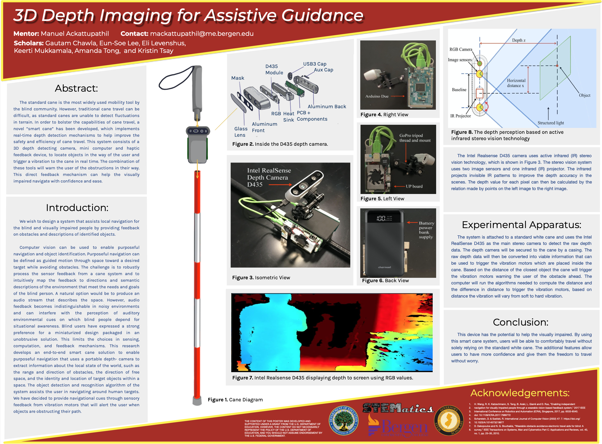
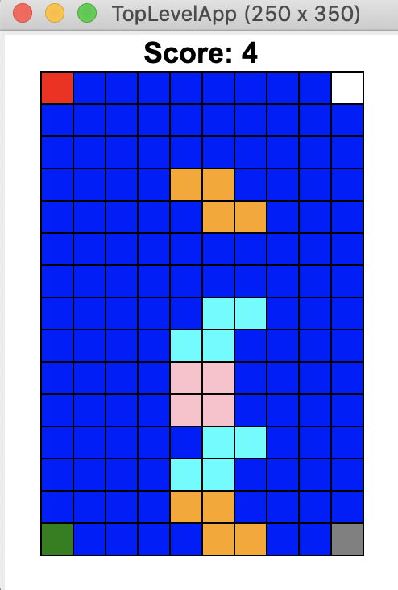

Smart Cane
September 2019-June 2020
As part of the 2019-2020 Governor STEM Scholars program, I worked with a research team of scholars to develop a smart cane for the visually impaired. We developed a self operating Arduino-powered smart cane system using a haptic feedback device and implemented a depth detection algorithm in C. This direct feedback mechanism was designed to help the visually impaired navigate with confidence and ease, by using audio signals and vibrations as warnings for obstacles.

College Buddy
November 2020
I developed a Python application for high school seniors to research universities and plan their application strategy, with a recommendation engine component to find schools that match a user's preferences. This application includes an essay editing platform using a File I/O system to store, retrieve and manipulate essay drafts. I used a TKinter GUI as well as selenium webdriving to scrape, collect and display relevant college data from internet. This slideshow displays a few of the features of the application.
See code.
Tetris Reimagined
November 2020
I created a Python application using a TKinter GUI as a version of the classic arcade game, Tetris. Users can control randomly generated blocks using key presses to rotate and reposition blocks, with an objective of avoiding overflow. This was a quick, fun project that I really enjoyed playing around with!
See code.

PageRank
November 2020
Worked with a partner and implemented a simplified version of Google's initial PageRank algorithm in Julia using oriented graphs summarized by Markov Transition matrices and random walks. This algorithm parses webpages and returns an output list of page rankings, based on relative importance and value.
C0VM
May 2021
As a capstone project in my Data Structures course, I developed a virtual machine for C0 (a typesafe subsect of C), using C to implement integer and pointer arithmetic, logical operators, control flow, stackframes, memory access, and other features. Code cannot be shared for integrity purposes.
Learn about C0.
Personal Portfolio
July 2021
I created a website using HTML, CSS, and Javascript to share some of my personal projects.
See code.
Dynamic Memory Allocator
October 2021
Created an implementation of malloc, realloc, calloc and free functions in C using segregated lists in order to maximize throughput and utilization of memory. Code cannot be shared for integrity purposes.
Tiny Shell
November 2021
Created an implementation of the unix shell with job control and basic commands, using process control, signaling and signal handling techniques. Code cannot be shared for integrity purposes.
Web Proxy Server
November 2021
Created an implementation of a concurrent web proxy server with multithreading. Code cannot be shared for integrity purposes.